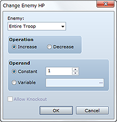
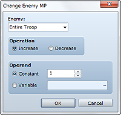
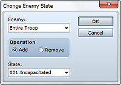
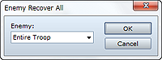
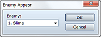
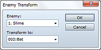
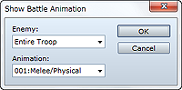
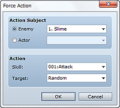

Increases/decreases the HP of one or more enemies.
Select the target enemy or enemies. Selecting Entire Troop makes all enemies subject to the command.
Select Increase or Decrease.
Specify the amount by which to increase/decrease HP. To specify a fixed value, select Constant and then enter a value. To specify the amount with a variable value, select Variable and then specify the variable to look up.
Selecting this option results in the K.O. state when HP falls to 0 or less. If it is not selected, HP will revert to 1 every time it falls to 0 or less.
• This command runs only when used in battle events.

Increases/decreases the MP of one or more enemies.
Select the target enemy or enemies. Selecting Entire Troop makes all enemies subject to the command.
Select Increase or Decrease.
Specify the amount by which to increase/decrease MP. To specify a fixed value, select Constant and then enter a value. To specify the amount with a variable value, select Variable and then specify the variable to look up.
• This command runs only when used in battle events.

Changes the state of one or more enemies.
Select the target enemy or enemies. Selecting Entire Troop makes all enemies subject to the command.
Select Add or Remove.
Specify the type of state to add/remove.
• This command runs only when used in battle events.

Restores the HP and MP of one or more enemies to their maximum values and removes all states.
Select the target enemy or enemies. Selecting Entire Troop makes all enemies subject to the command.
This command runs only when used in battle events.

Spawns the enemies for which the Appear Halfway option was set in troop data.
Select the target enemy or enemies.
• This command runs only when used in battle events.

Transforms the currently spawned enemy into another enemy. The HP and MP of the transformed enemy will be the same as that of the pre-transformation enemy.
Select the enemy to transform.
Select the enemy into which to transform.
• This command runs only when used in battle events.

Displays an animation targeting an enemy.
Select the target enemy.
Specify the animation to display.
• This command runs only when used in battle events.

Forces an enemy/actor to use a specific skill.
Select the target enemy/actor.
In Skill, specify the skill to be forcibly used. In Target, specify the target of the skill by selecting Last Target (same target as the most recent action taker), Random (randomly selected), or Index X (X is a value between 1 and 8). See the notes below for more information.
• This command runs only when used in battle events.
• The specified action is performed when the character's turn comes around. The character's action (unforced) will be cancelled on that turn.
• This event command will not be processed if the specified character is done with his action on the same turn when the command runs.
• When the scope of the specified skill is all enemies/actors or the user, the setting in Target will be ignored in favor of the specified scope.
• Specifying Index X (where X is 1 to 8) for Target results in the target being the corresponding actor in the party formation (first actor when X is 1) if Action Subject is an enemy, and if Action Subject is an actor, it results in the target being the corresponding enemy in the enemy setting order (first enemy when X is 1).
Forcibly ends the battle and returns to the map. There are no settings to be made for this command.
• This command runs only when used in battle events.